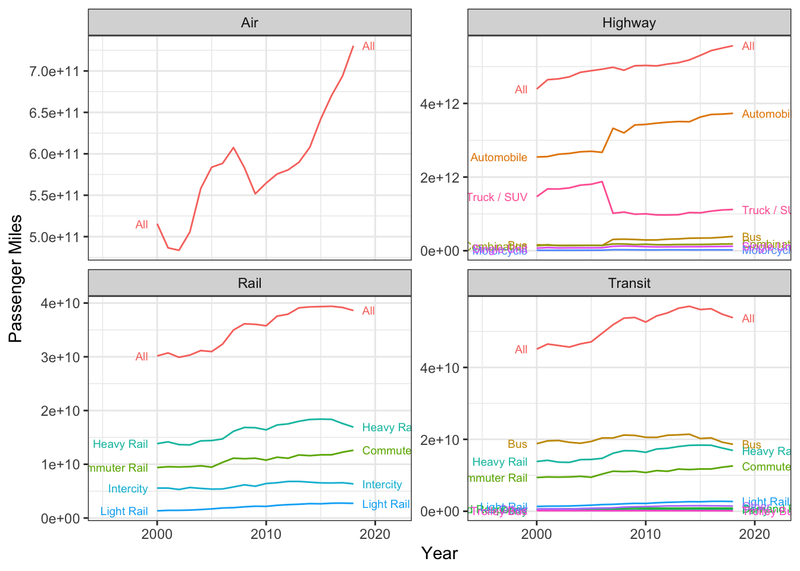

knitr::include_graphics("https://i.imgur.com/7txj1aA.png")
I came across this graphic from an APTA Factbook(p. 20) which shows transit with an enormous safety advantage over automobiles. I was curious if I could update the data using information from the Bureau of Transportation Statistics.
knitr::include_graphics("https://i.imgur.com/7txj1aA.png")
First, we want to get passenger miles traveled by different modes. The BTS has this data in an Excel spreadsheet at https://www.bts.gov/content/us-passenger-miles. The data in the spreadsheet is somewhat spotty, and there are plenty of footnotes describing the fact that the sources of the different elements have changed over the years. But let’s go with just data from 2000 onward.
I wanted to read the Excel files directly from the BTS website, but there was just too much cleaning that needed to be done to make them machine-readable in a nice way. You can find the lightly modified spreadsheet I used, including a separate analysis from this one, here
# get Excel file from BTS
passmiles <- read_excel(here("posts/safety/passmiles.xlsx"),
skip = 1, sheet = "passenger_miles") %>%
filter(!is.na(Mode)) %>%
select(Group, Mode, `2000`:`2018`) %>%
pivot_longer(cols = `2000`:`2018`, names_to = "year", values_to = "passmiles",
names_transform = list(year = as.integer)) %>%
# convert from million miles to miles
mutate( passmiles = passmiles * 1e6 ) %>%
distinct() The numbers in the data table are given in Millions. To keep our units straight, we are going to use straight miles for now.
ggplot(passmiles, aes(x = year, y = passmiles, label = Mode, color = Mode,
group = str_c(Group, Mode))) +
geom_path() + facet_wrap(~Group, scales = "free_y") +
geom_dl(method = list(dl.trans(x = x + 0.2), "last.points", cex = 0.6)) +
geom_dl(method = list(dl.trans(x = x - 0.2), "first.points", cex = 0.6)) +
scale_x_continuous(limits = c(1995, 2022)) +
scale_color_discrete(guide = "none") +
ylab("Passenger Miles") + xlab("Year") +
theme_bw()
The BTS also publishes statistics on fatality broken up by mode at: https://www.bts.gov/content/transportation-fatalities-modea. However, there are a number of potential issues arising from these data. First, transit fatalities are grouped by workers and vehicle occupants, but are not separated by mode. Additionally, there are a number of redundant categories.
fatalities <- read_excel(here("posts/safety/passmiles.xlsx"),
sheet = "fatalities") %>%
filter(!is.na(Mode)) %>%
select(Group, Mode, `2000`:`2018`) %>%
pivot_longer(cols = `2000`:`2018`, names_to = "year", values_to = "fatalities",
names_transform = list(year = as.integer))ggplot(fatalities %>% filter(Group %in% c("Air", "Highway", "Rail", "Transit")),
aes(x = year, y = fatalities, label = Mode, color = Mode,
group = str_c(Group, Mode))) +
geom_path() + facet_wrap(~Group, scales = "free_y") +
geom_dl(method = list(dl.trans(x = x + 0.2), "last.points", cex = 0.6)) +
geom_dl(method = list(dl.trans(x = x - 0.2), "first.points", cex = 0.6)) +
scale_x_continuous(limits = c(1995, 2022)) +
scale_color_discrete(guide = "none") +
ylab("Fatalities") + xlab("Year") +
theme_bw()Warning: Removed 6 rows containing missing values (`geom_path()`).Warning: Removed 6 rows containing missing values (`geom_dl()`).
Removed 6 rows containing missing values (`geom_dl()`).Because the two report tables use different modal definitions, we will consider only group-levels with the following pairs:
miles_summary <- passmiles %>%
# remove bus miles from highway group
filter(!(Group == "Highway" & Mode == "Bus")) %>%
# only keep intercity rail
filter(!(Group == "Rail" %in% c("Light Rail", "Heavy Rail", "Commuter Rail", "All"))) %>%
# remove summary miles from all other groups
filter(!(Group == "Transit" & Mode == "All")) %>%
filter(!(Group == "Highway" & Mode == "All")) %>%
# simplify transit modes into rail and non-rail
mutate(
Mode = case_when(
Group == "Transit" & Mode %in% c("Light Rail", "Heavy Rail", "Commuter Rail") ~ "Rail",
Group == "Transit" ~ "Non-Rail",
Group == "Highway" ~ "All",
Group == "Rail" ~ "All",
Group == "Air" ~ "All",
TRUE ~ Mode
)
) %>%
group_by(Group, Mode, year) %>%
summarise(passmiles = sum(passmiles))`summarise()` has grouped output by 'Group', 'Mode'. You can override using the
`.groups` argument.fatalities_summary <- fatalities %>%
mutate(
keep = case_when(
# all air
Group == "Air" & Mode == "All" ~ T,
# all highway but bus
Group == "Highway" & !(Mode %in% c("All", "Bus")) ~ T,
# transit rail and non-rail
Group == "Transit" & Mode %in% c("Non-Rail", "Rail") ~ T,
# passenger rail
Group == "Rail" & Mode == "All" ~ T,
TRUE ~ F
),
Mode = ifelse(Group == "Highway", "All", Mode),
) %>% filter(keep) %>%
group_by(Group, Mode, year) %>%
summarise(fatalities = sum(fatalities))`summarise()` has grouped output by 'Group', 'Mode'. You can override using the
`.groups` argument.# remove transit rail fatalities from rail
transit_rail_fatalities <- fatalities_summary %>% filter(Mode == "Rail") %>% pull(fatalities)
fatalities_summary <- fatalities_summary %>%
mutate(
transit_rail_fatalities = transit_rail_fatalities,
fatalities = ifelse(Group == "Rail", fatalities - transit_rail_fatalities, fatalities)
)Finally, we can join the two datasets together, and compute the fatalities per 100 million miles.
fatal_rate <- left_join(miles_summary, fatalities_summary,
by = c("Group", "Mode", "year")) %>%
mutate(
fatal_rate = fatalities / (passmiles / 1e8) # fatalities per 100 million miles
)ggplot(fatal_rate, aes(
x = year, y = fatal_rate,
color = str_c(Group, Mode, sep = " "),
label = str_c(Group, Mode, sep = " "),
)) +
geom_path() +
geom_dl(method = list(dl.trans(x = x + 0.2), "last.points", cex = 0.6)) +
geom_dl(method = list(dl.trans(x = x - 0.2), "first.points", cex = 0.6)) +
scale_x_continuous(limits = c(1999, 2019)) +
scale_color_discrete(guide = "none") +
ylab("Fatalities per 100 Million Passenger Miles") +
xlab("Year") +
theme_bw()From my understanding, if a light rail train hits a pedestrian, it counts as a highway fatality and a transit fatality. Given that a large number of the rail fatalities are due to trespassers and at-grade crossings, this may overstate the safety to rail passengers. Also, it double-counts fatalities resulting from a commuter rail train colliding with a private automobile.
My thoughts on the APTA chart: